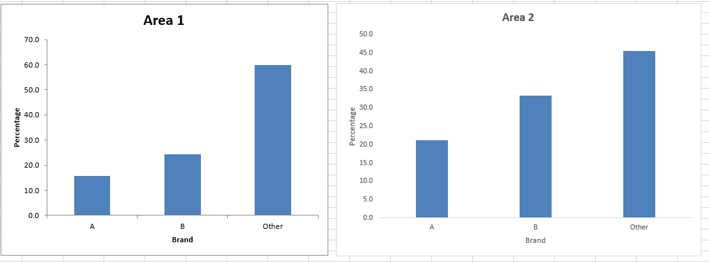
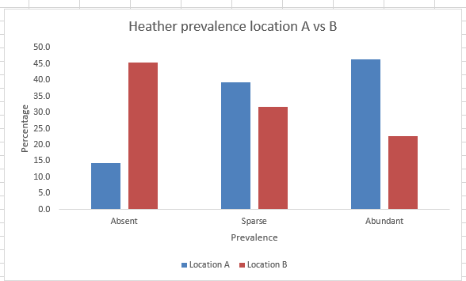
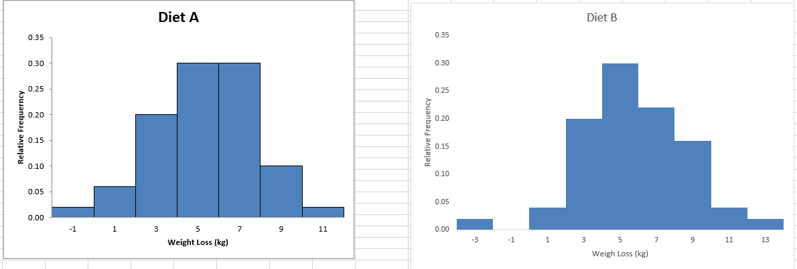

In unit 9 we looked into differnet methods for
analysing qualitative data which are always more difficult to analyse
than quantitative data. I have worked with different methods of
analysing qualitative data in the past in my daily work and in my
project work I will utilise quantitative analysis methods as it
eliminates uncertainties and facilitates hypothesis testing. After
carefully considering the feedback of my peers I also posted my summary
post.
Exercises 9.1
The excel file can be found here
The chart above shows that in Area 2 other brands are preferred.
Exercise 9.2
The excel file can be found here

The chart above shows that Heathers are more prevalent in location A than in B.
Exercise 9.3
The file can be found here

When compared to Diet A, Diet B seems to have a more varied outcome.
While Diet A had a significant number of individuals losing around 5 to
7 kg, Diet B has a broader range with a peak around the same weight
loss but also more varied results on both ends.While Diet A appears to
have a more predictable weight loss outcome with most individuals
losing around 5 to 7 kg, Diet B presents a broader spectrum of results,
with the possibility of both higher weight loss and weight gain.